Toutes les fonctions, sur une page
Every feature, on one page
De l'import des fichiers à l'export de la vidéo. Le badge bleu indique où trouver chaque réglage dans l'application. Tout se passe dans le navigateur : la vidéo et le log ne quittent pas ta machine.
From importing files to exporting the video. The blue badge tells you where each setting lives in the app. Everything runs in the browser: the video and the log never leave your computer.
Démarrage rapide
Quick start
- Fichiers : dépose la vidéo et le log de vol (ou clique « Essayer avec un log d'exemple »).
- Synchro : souvent automatique (son des moteurs, ou télémétrie intégrée à la vidéo). Sinon, marque un instant reconnaissable.
- Jauges : choisis les données, glisse-les dans l'aperçu, règle leur apparence.
- Couper (sous la frise) puis Export : MP4 avec incrustation, ou séquence PNG transparente.
- Files: drop the video and the flight log (or click “Try with a sample log”).
- Sync: often automatic (motor sound, or telemetry embedded in the video). Otherwise, mark a recognisable moment.
- Gauges: pick the data, drag them in the preview, tune their look.
- Cut (under the timeline), then Export: MP4 with the overlay, or a transparent PNG sequence.
Optimisé pour Chrome et Edge sur ordinateur (export rapide, calage sur l'image, écriture directe des longs exports). Firefox et Safari fonctionnent avec des limites.
Optimised for desktop Chrome and Edge (fast export, image-motion sync, direct writing of long exports). Firefox and Safari work with limitations.
Fichiers (upload)
Files (upload)
Vidéo du vol 1. Fichiers
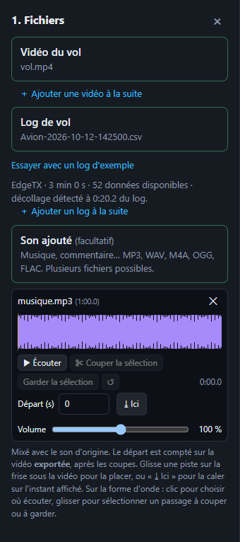
- Clic ou glisser-déposer : MP4, MOV, AVI, MKV, WebM, LRF (aperçu DJI basse résolution), INSV / LRV (Insta360).
- Plusieurs vidéos d'un coup, ou « ＋ Ajouter une vidéo à la suite » : elles sont lues bout à bout comme un seul clip (enregistrement découpé par la caméra).
- Sans vidéo, l'aperçu s'affiche sur fond neutre : clique dans la courbe du log pour choisir l'instant.
Flight video 1. Files
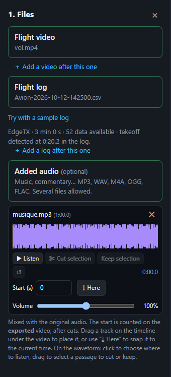
- Click or drag & drop: MP4, MOV, AVI, MKV, WebM, LRF (DJI low-res preview), INSV / LRV (Insta360).
- Several videos at once, or “＋ Add a video after this one”: they play back to back as a single clip (recording split by the camera).
- Without a video, the preview shows on a neutral background: click the log chart to pick the moment.
Log de vol 1. Fichiers
| Source | Fichier | Synchro |
|---|---|---|
| EdgeTX | .csv du dossier LOGS | à faire |
| ArduPilot | .bin DataFlash ou .log | à faire |
| INAV / Betaflight | blackbox brut .TXT / .BBL / .BFL ou .csv | à faire |
| DJI | vidéo .MP4, .SRT, journal DJIFlightRecord_….txt ou son .csv | auto (MP4, SRT) |
| GoPro | la vidéo .MP4 elle-même | auto |
| Insta360 (expérimental) | vidéo .INSV / .MP4 d'origine | auto |
| Walksnail / DJI WTFOS (expérimental) | .osd, .srt Walksnail | auto |
| Garmin, Wahoo, Strava… | .FIT, .TCX, .GPX | à faire |
- Vidéo DJI / GoPro / Insta360 sans autre log : la télémétrie intégrée est lue automatiquement.
- Un blackbox contient souvent plusieurs vols (un par armement) : le plus gros est choisi, une liste permet d'en prendre un autre.
- « ＋ Ajouter un log à la suite » : colle un autre log derrière (log coupé en plusieurs fichiers, vol suivant). Chaque log devient une partie recalable.
- « Essayer avec un log d'exemple » charge un log de démonstration.
Flight log 1. Files
| Source | File | Sync |
|---|---|---|
| EdgeTX | .csv from the LOGS folder | manual |
| ArduPilot | DataFlash .bin or .log | manual |
| INAV / Betaflight | raw blackbox .TXT / .BBL / .BFL or .csv | manual |
| DJI | .MP4 video, .SRT, DJIFlightRecord_….txt record or its .csv | auto (MP4, SRT) |
| GoPro | the .MP4 video itself | auto |
| Insta360 (experimental) | original .INSV / .MP4 | auto |
| Walksnail / DJI WTFOS (experimental) | .osd, Walksnail .srt | auto |
| Garmin, Wahoo, Strava… | .FIT, .TCX, .GPX | manual |
- DJI / GoPro / Insta360 video with no other log: the embedded telemetry is read automatically.
- A blackbox often holds several flights (one per arming): the largest is picked, a list lets you choose another.
- “＋ Add a log after this one”: appends another log (log split into several files, next flight). Each log becomes a realignable part.
- “Try with a sample log” loads a demo log.
Son ajouté (musique, commentaire) 1. Fichiers
- Un ou plusieurs fichiers : MP3, WAV, M4A / AAC, OGG / Opus, FLAC.
- Chaque piste a un départ (s), un volume (0 à 200 %), et se retire avec ✕. « ⤓ Ici » la cale sur l'instant affiché.
- Le départ est compté sur la vidéo exportée (après les coupes) : la musique continue sans saut aux raccords.
- Glisse la piste dans son couloir de la frise pour la déplacer.
- Forme d'onde : clic = point d'écoute (« ▶ Écouter »), glisser = sélection à couper ou à garder seule ; « ↺ » annule les coupes. Voir aussi Couper le son.
- Mixé avec le son d'origine en une seule piste audio ; volume réduit automatiquement si le mix sature.
Added sound (music, commentary) 1. Files
- One or more files: MP3, WAV, M4A / AAC, OGG / Opus, FLAC.
- Each track has a start (s), a volume (0 to 200 %), and is removed with ✕. “⤓ Here” aligns it on the current moment.
- The start counts on the exported video (after cuts): the music keeps going across the joins.
- Drag the track in its lane of the timeline to move it.
- Waveform: click = listening point (“▶ Listen”), drag = selection to cut or keep alone; “↺” undoes the cuts. See also Cutting the sound.
- Mixed with the original sound into a single audio track; volume lowered automatically if the mix clips.
Synchronisation vidéo / log
Video / log synchronisation
Calage automatique 2. Synchro
- Synchro automatique (son des moteurs) : cochée par défaut, compare le bruit des moteurs dans le son de la vidéo à la courbe des gaz.
- Caler sur le son des moteurs : relance cette comparaison à la demande.
- Caler sur le mouvement de l'image : compare les rotations visibles (roulis, tangage, lacet) à celles du log. Utile sans son exploitable (moteur thermique, vent). Analyse au plus 2 min, demande Chrome / Edge.
- Vidéo DJI MP4 / SRT, GoPro, Insta360, OSD lunettes : synchro faite d'office.
Automatic alignment 2. Sync
- Auto sync (motor sound): on by default, compares the motor noise in the video's sound to the throttle curve.
- Sync on motor sound: runs that comparison on demand.
- Sync on image motion: compares the visible rotations (roll, pitch, yaw) to the log. Useful without usable sound (combustion engine, wind). Analyses at most 2 min, needs Chrome / Edge.
- DJI MP4 / SRT, GoPro, Insta360, goggle OSD: synced out of the box.
Calage manuel 2. Synchro
- Mets la vidéo sur un instant reconnaissable (décollage, coup de gaz) → Marquer l'instant vidéo.
- Clique sur le même instant dans la courbe du log, ou Caler sur le décollage (détection automatique).
- Affine le décalage avec ±0,01 / ±0,1 / ±1 s ou en le tapant.
La courbe sous la vidéo peut afficher n'importe quelle donnée du log, en vue « Aligné sur la frise », « Log complet » ou « Vidéo montée ».
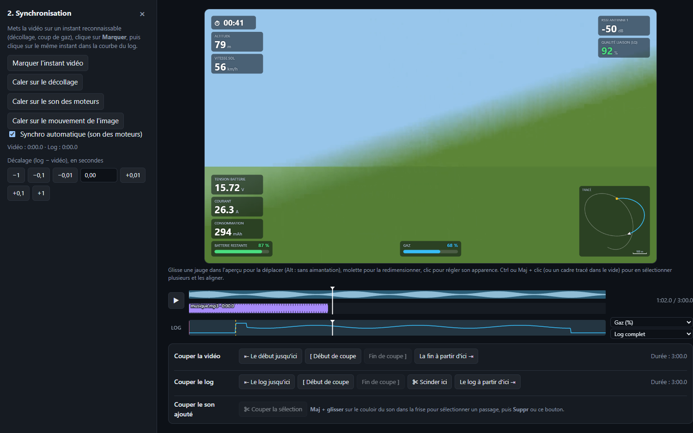
Manual alignment 2. Sync
- Put the video on a recognisable moment (take-off, throttle punch) → Mark video time.
- Click the same moment in the log chart, or Snap to takeoff (automatic detection).
- Fine-tune the offset with ±0.01 / ±0.1 / ±1 s or by typing it.
The chart under the video can show any log field, in “Aligned with timeline”, “Full log” or “Edited video” view.
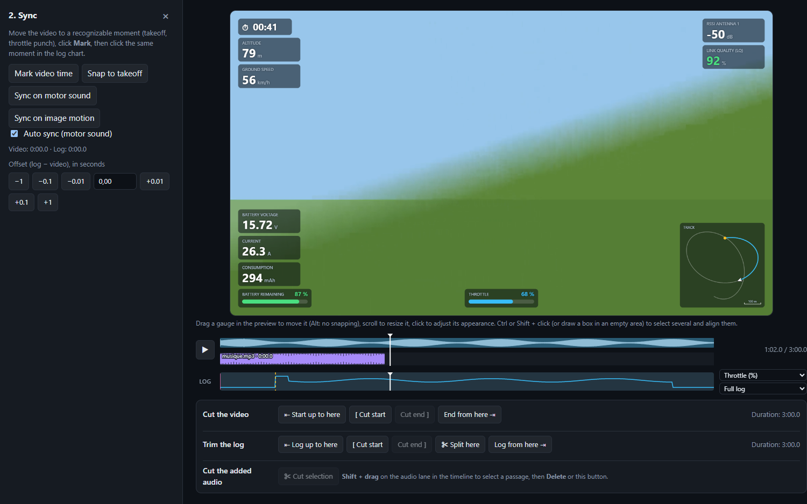
Jauges
Gauges
Ajouter et choisir l'affichage 3. Jauges
- « Ajouter une jauge » : recherche une donnée (Entrée ajoute le premier résultat).
- Types d'affichage : Valeur, Graphique, Cadran, Barre, Cadran à aiguille, Échelle verticale (défile derrière la valeur, avec tendance).
- Position : 8 zones prédéfinies, ou « Libre » en glissant la jauge dans l'aperçu. L'ordre de la liste = ordre d'empilement dans une zone.
- Réglages de la donnée : multiplier / ajouter (conversion), unité, décimales, lissage, plage min / max, seuils de couleur, alarme au-dessus / en dessous d'un seuil.
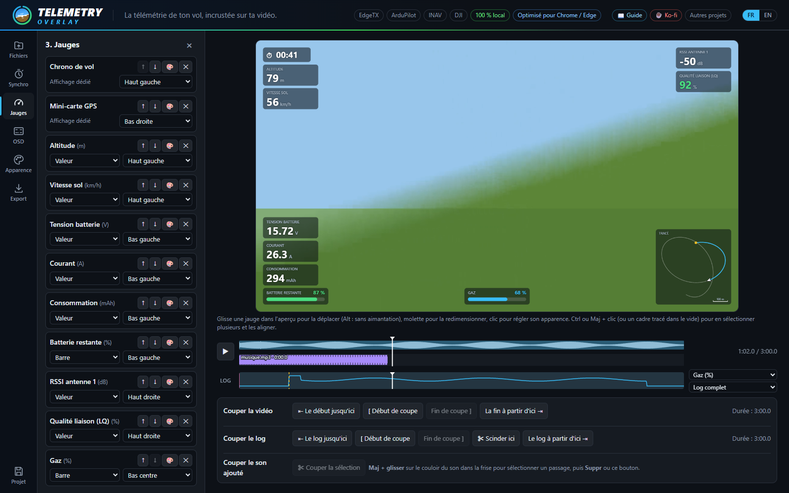
Adding gauges and choosing the display 3. Gauges
- “Add a gauge”: search a field (Enter adds the first result).
- Display types: Value, Graph, Dial, Bar, Needle gauge, Vertical tape (scrolls behind the value, with trend).
- Position: 8 preset zones, or “Free” by dragging the gauge in the preview. List order = stacking order inside a zone.
- Data settings: multiply / add (conversion), unit, decimals, smoothing, min / max range, colour thresholds, alarm above / below a threshold.
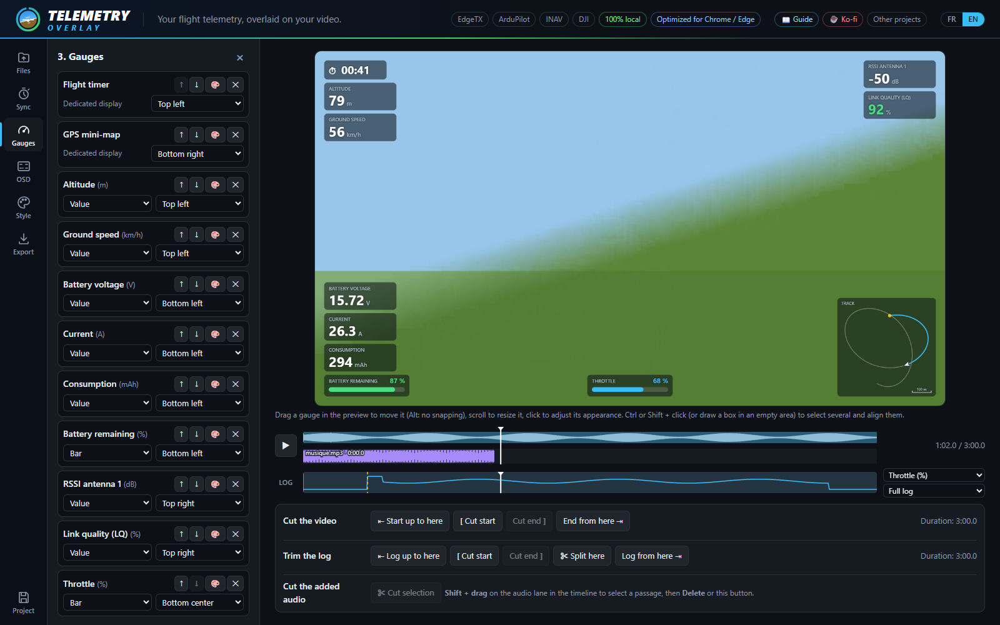
Jauges spéciales 3. Jauges › Spéciales
- Chrono de vol, Statistiques du vol (vitesse / altitude / distance max, distance parcourue).
- Panneaux de valeurs (3) : plusieurs données dans un cadre, lignes ajoutées / retirées / réordonnées dans 🎨, titre optionnel.
- Horizon artificiel rond ou rectangulaire (attitude estimée depuis le GPS si pas de gyro, mention « EST. »).
- Compas (bandeau de cap, ou route sol), Manches, Carte de vol 3D (sur relief réel, ou en plein écran).
- Mini-carte GPS : fond satellite (Esri, Internet requis), tout le vol ou suivi de l'aéronef avec zoom, nord ou cap en haut. Vue agrandie déclenchée par n'importe quelle donnée (inter de la radio, voie RC…) au-dessus / en dessous d'un seuil, avec taille, contenu et durée d'animation réglables.
Special gauges 3. Gauges › Special
- Flight timer, Flight statistics (max speed / altitude / distance, distance travelled).
- Value panels (3): several fields in one frame, rows added / removed / reordered in 🎨, optional title.
- Artificial horizon, round or rectangular (attitude estimated from GPS without a gyro, marked “EST.”).
- Compass (heading tape, or ground track), Sticks, 3D flight map (on real terrain, or full screen).
- GPS mini-map: satellite background (Esri, needs Internet), whole flight or follow the aircraft with zoom, north or heading up. Expanded view triggered by any field (radio switch, RC channel…) above / below a threshold, with adjustable size, content and animation duration.
Carte de vol 3D sur relief réel 3. Jauges › Carte de vol 3D
- Fond : « Plat (quadrillage) » ou « Relief réel + photo satellite » — le vol est dessiné sur le vrai relief (altitudes AWS Terrain Tiles) drapé de la photo satellite (Esri), rendu en WebGL.
- Vue fixe (depuis le sud-ouest) ou tournante ; exagération du relief ×1 à ×3.
- La trace est posée au sol au point de décollage, que l'altitude du log soit relative ou absolue.
3D flight map on real terrain 3. Gauges › 3D flight map
- Background: “Flat (grid)” or “Real terrain + satellite photo” — the flight is drawn over the real relief (AWS Terrain Tiles elevations) draped with the satellite photo (Esri), rendered in WebGL.
- View fixed (from the south-west) or rotating; terrain exaggeration ×1 to ×3.
- The track is set on the ground at the takeoff point, whether the log altitude is relative or absolute.
Vue 3D plein écran à la place de la vidéo 3. Jauges › Carte de vol 3D
- Plein écran : « Jamais », « Toujours », ou « Selon une donnée du log » (un inter de la radio, une voie RC…) au-dessus / en dessous d'un seuil, avec une durée de transition (fondu, 0 à 3 s).
- Une caméra suit l'aéronef par l'arrière — proche (60 m), moyenne (150 m) ou lointaine (400 m) — au-dessus du relief réel qui s'étend jusqu'à un horizon brumeux sous un ciel.
- Un rideau à la couleur des jauges descend sous la partie déjà volée.
- Les autres jauges restent par-dessus ; la jauge 3D elle-même est masquée pendant le plein écran.
Relief, photo satellite et fond de la mini-carte sont désactivés par défaut : les activer télécharge les tuiles de la zone du vol, ces serveurs apprennent donc où tu as volé (rien d'autre n'est envoyé). Connexion Internet nécessaire ; les tuiles sont chargées avant l'export, séquence PNG comprise.
Full-screen 3D view instead of the video 3. Gauges › 3D flight map
- Full screen: “Never”, “Always”, or “Driven by a log value” (a radio switch, an RC channel…) above / below a threshold, with a transition duration (fade, 0 to 3 s).
- A camera follows the aircraft from behind — close (60 m), medium (150 m) or far (400 m) — over the real terrain stretching to a hazy horizon under a sky.
- A curtain in the gauge colour hangs under the part already flown.
- The other gauges stay on top; the 3D gauge itself is hidden while the view is full screen.
Terrain, satellite photo and the mini-map background are off by default: enabling them downloads the tiles of the flight area, so these servers learn where you flew (nothing else is sent). Needs an Internet connection; tiles are loaded before the export, PNG sequence included.
Placer et régler dans l'aperçu Aperçu
- Glisser une jauge pour la déplacer (aimantation sur marges et centre ; Alt pour la désactiver). ⟲ la remet à sa place.
- Molette sur une jauge : la redimensionner.
- Clic sur une jauge (ou 🎨 dans la liste) : son apparence personnalisée — nom, position du nom, police, fond, opacité, couleurs, durée du graphique, taille. « Appliquer à toutes les jauges » recopie le réglage.
- Masquer / flouter selon une valeur : cache ou floute la jauge quand une donnée (la sienne ou une autre, ex. un inter de la radio) passe au-dessus / en dessous d'un seuil, avec une transition réglable.
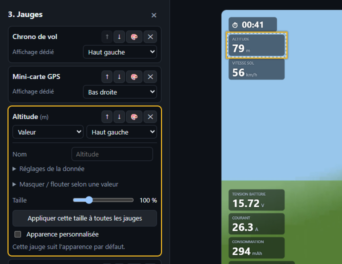
Placing and tuning in the preview Preview
- Drag a gauge to move it (snaps to margins and centre; Alt to disable). ⟲ puts it back.
- Mouse wheel on a gauge: resize it.
- Click a gauge (or 🎨 in the list): its custom look — name, name position, font, background, opacity, colours, graph duration, size. “Apply to all gauges” copies the setting.
- Hide / blur based on a value: hides or blurs the gauge when a field (its own or another, e.g. a radio switch) goes above / below a threshold, with an adjustable transition.
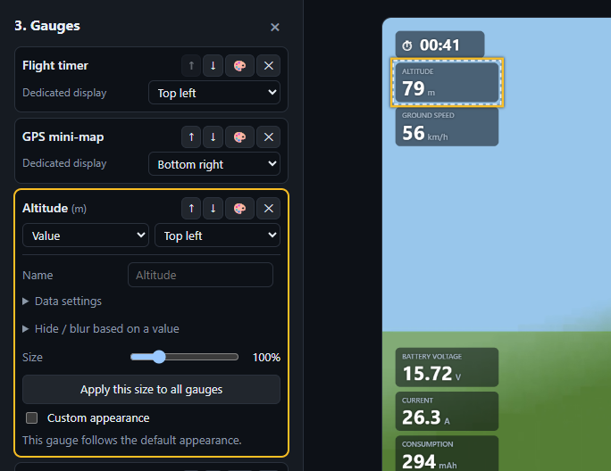
Sélection de plusieurs jauges et alignement Aperçu
- Ctrl ou Maj + clic : ajoute / retire une jauge de la sélection.
- Tracer un cadre dans le vide sélectionne les jauges qu'il touche (avec Ctrl / Maj, complète la sélection). Échap vide la sélection.
- Glisser une jauge sélectionnée déplace tout le groupe.
- La barre d'outils qui apparaît (déplaçable par sa poignée, double-clic pour la remettre en haut) :
- Aligner : gauche, centre horizontal, droite, haut, centre vertical, bas ;
- Répartir horizontalement / verticalement (espacement égal, 3 jauges ou plus) ;
- Disposer en Ligne ou en Colonne ;
- Fond commun : un seul fond pour tout le groupe (recliquer pour le retirer).
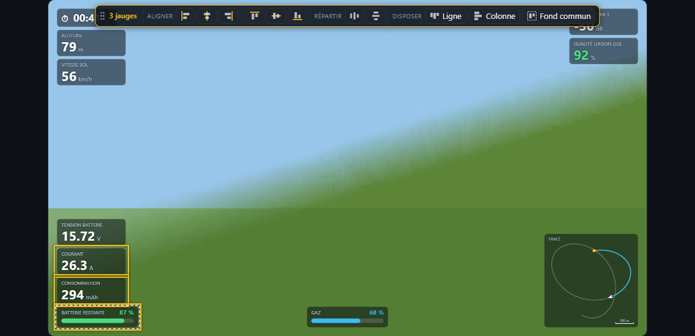
Selecting several gauges and aligning them Preview
- Ctrl or Shift + click: adds / removes a gauge from the selection.
- Drawing a box in empty space selects the gauges it touches (with Ctrl / Shift, adds to the selection). Esc clears the selection.
- Dragging a selected gauge moves the whole group.
- The toolbar that appears (movable by its grip, double-click to put it back on top):
- Align: left, horizontal centre, right, top, vertical centre, bottom;
- Distribute horizontally / vertically (equal spacing, 3 gauges or more);
- Arrange as a Row or a Column;
- Shared background: one background for the whole group (click again to remove).
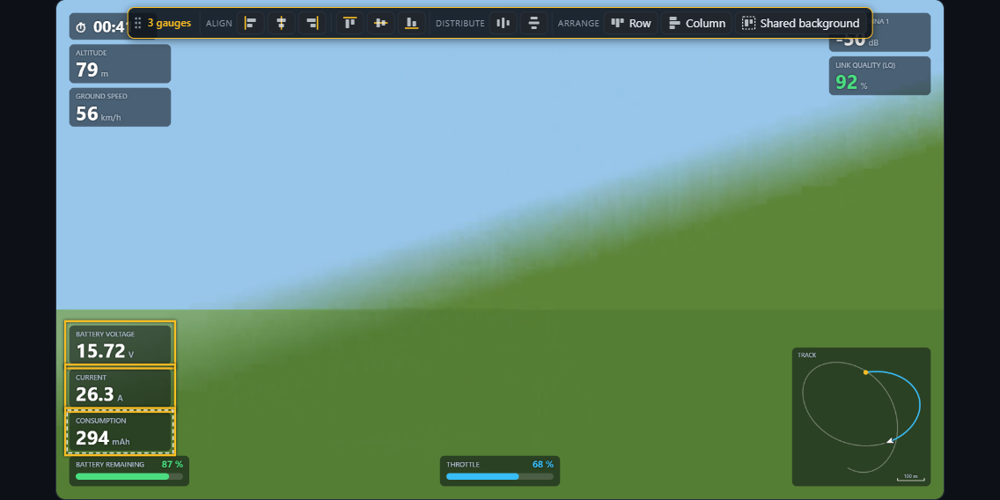
Apparence par défaut
Default appearance
Pour toutes les jauges Apparence
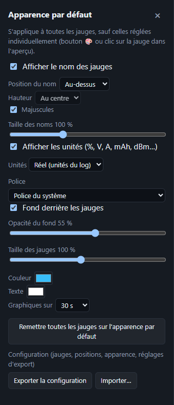
- Nom des jauges : affiché ou non, position (dessus, dessous, gauche, droite), hauteur, majuscules, taille.
- Unités affichées ou non ; système : Réel (celles du log), Métrique, Impérial, Aviation (ft, kt, NM).
- Police : système, web (Orbitron, Rajdhani…) ou toute police installée en tapant son nom.
- Fond et son opacité, taille générale, couleur d'accent, couleur du texte, durée des graphiques (10 s à 2 min).
- « Remettre toutes les jauges sur l'apparence par défaut » efface les réglages individuels.
For all gauges Style
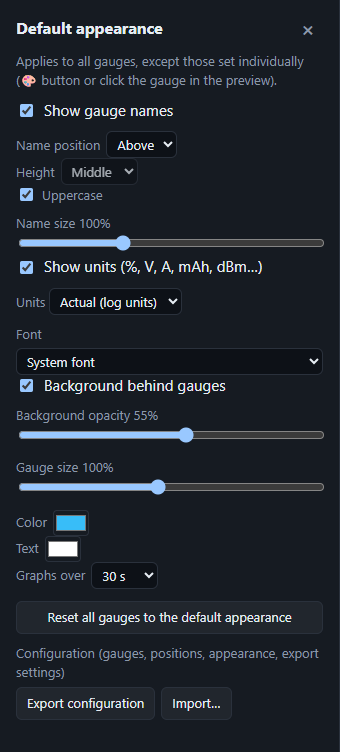
- Gauge names: shown or not, position (above, below, left, right), height, upper case, size.
- Units shown or not; system: Actual (the log's), Metric, Imperial, Aviation (ft, kt, NM).
- Font: system, web (Orbitron, Rajdhani…) or any installed font by typing its name.
- Background and its opacity, overall size, accent colour, text colour, graph duration (10 s to 2 min).
- “Reset all gauges to the default appearance” clears individual settings.
OSD d'origine (Walksnail / DJI)
Original OSD (Walksnail / DJI)
Redessiner l'OSD des lunettes OSD
- Charge le
.osdet la police OSD.png: l'OSD est redessiné par-dessus la vidéo, avec ou sans les jauges. - Taille, décalage X / Y, vitesse (corrige la dérive d'horloge).
- Masquer des cases… puis clic dans l'aperçu pour cacher un élément (nom du pilote, coordonnées GPS…).
Redrawing the goggles' OSD OSD
- Load the
.osdand the OSD font.png: the OSD is redrawn over the video, with or without gauges. - Size, X / Y offset, speed (fixes clock drift).
- Hide cells… then click in the preview to hide an item (pilot name, GPS coordinates…).
Couper la vidéo, le log et le son
Cutting the video, the log and the sound
Couper la vidéo Sous la frise
- « ⇤ Le début jusqu'ici » et « La fin à partir d'ici ⇥ ».
- « [ Début de coupe » (I) puis « Fin de coupe ] » (O) pour retirer un passage au milieu. ✕ annule une coupe.
- Passages coupés hachurés en rouge, sautés dans l'aperçu ; la télémétrie reste synchronisée.
Cutting the video Under the timeline
- “⇤ Start up to here” and “End from here ⇥”.
- “[ Cut start” (I) then “Cut end ]” (O) to remove a middle passage. ✕ undoes a cut.
- Cut passages are hatched red and skipped in the preview; telemetry stays in sync.
Couper le log et le recaler par parties Sous la frise
- « Le log jusqu'ici » / « à partir d'ici » / coupe au milieu : ignore le sol, l'attente… (jauges, statistiques et échelles n'en tiennent plus compte).
- ✂ Scinder ici : coupe le log en deux parties sans rien retirer.
- Chaque partie se recale indépendamment : décalage, « commencer ici », glisser sur la courbe, coller à la précédente, caler sur le son ou sur le mouvement de l'image, ou recoller.
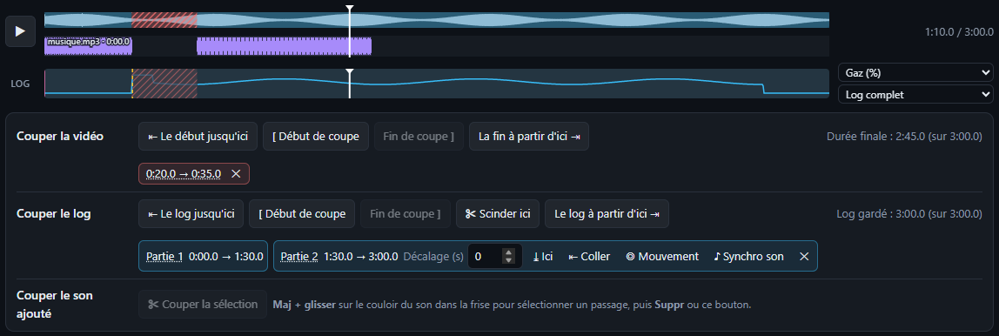
Cutting the log and realigning it in parts Under the timeline
- “⇤ Log up to here” / “Log from here ⇥” / middle cut: ignores ground time, waiting… (gauges, statistics and scales stop counting it).
- ✂ Split here: splits the log into two parts without removing anything.
- Each part realigns on its own: offset, “start here”, drag on the chart, stick to the previous one, sync on sound or image motion, or join back.
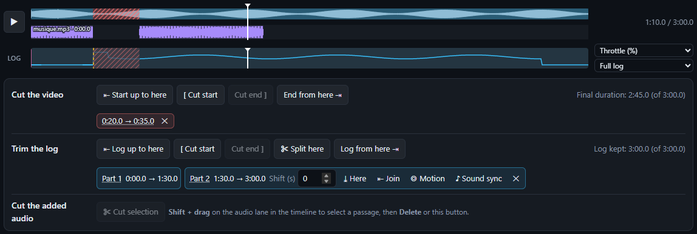
Couper le son ajouté Sous la frise
- Maj + glisser sur le couloir d'un son dans la frise pour sélectionner un passage, puis Suppr ou « ✂ Couper la sélection ».
- Ou depuis la forme d'onde de la piste dans « 1. Fichiers ». Les raccords sont adoucis par un court fondu.
Cutting the added sound Under the timeline
- Shift + drag on a sound's lane in the timeline to select a passage, then Del or “✂ Cut selection”.
- Or from the track's waveform in “1. Files”. Joins are smoothed by a short fade.
Export
Export
Formats 4. Export
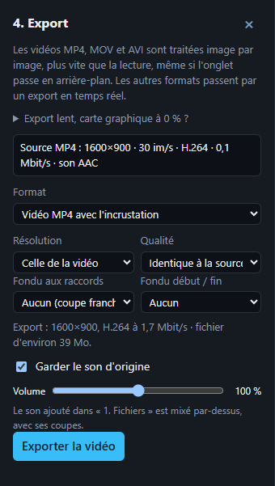
- Vidéo MP4 avec l'incrustation. Pour MP4 / MOV / AVI : export rapide image par image (plus vite que la lecture, onglet en arrière-plan possible). Autres formats : export temps réel (onglet au premier plan).
- Séquence PNG transparente : l'incrustation seule, à poser dans Premiere, Resolve, Final Cut… Jusqu'en 4K même depuis une vidéo HD.
- Sous Chrome / Edge, le fichier est écrit au fil de l'eau : les longs exports 4K passent.
Formats 4. Export
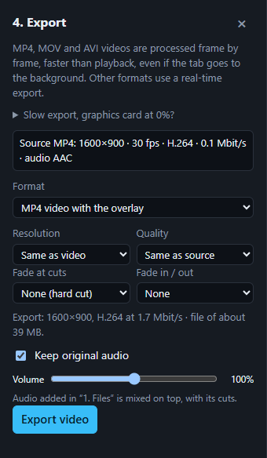
- MP4 video with the overlay. For MP4 / MOV / AVI: fast export frame by frame (faster than playback, tab may go to the background). Other formats: real-time export (tab in the foreground).
- Transparent PNG sequence: the overlay alone, to place in Premiere, Resolve, Final Cut… Up to 4K even from an HD video.
- In Chrome / Edge, the file is written as it encodes: long 4K exports work.
Réglages 4. Export
- Résolution : celle de la vidéo, ou 4K / 1440p / 1080p / 720p.
- Qualité : identique à la source (par défaut), supérieure, maximale, légère, ou débit personnalisé en Mbit/s. Estimation du fichier affichée.
- Fondus : aux raccords (0,25 à 1 s) et début / fin (0,5 à 3 s), image et son.
- Son : garder le son d'origine (avec volume) ; les pistes ajoutées sont mixées par-dessus.
- L'export peut être annulé. Seuls les passages gardés sont exportés.
Export lent, carte graphique à 0 % ? Paramètres Windows › Système › Affichage › Graphiques → navigateur en « Hautes performances », puis relance-le. Branche le PC sur secteur.
Settings 4. Export
- Resolution: the video's, or 4K / 1440p / 1080p / 720p.
- Quality: same as source (default), higher, maximum, light, or custom bitrate in Mbit/s. File size estimate shown.
- Fades: at joins (0.25 to 1 s) and start / end (0.5 to 3 s), picture and sound.
- Sound: keep the original sound (with volume); added tracks are mixed on top.
- The export can be cancelled. Only kept passages are exported.
Slow export, graphics card at 0 %? Windows Settings › System › Display › Graphics → set the browser to “High performance”, then restart it. Plug the PC into mains power.
Projet, disposition et configuration
Project, layout and configuration
Sauvegarder et reprendre Projet · Apparence
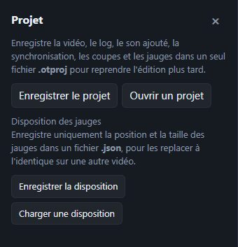
| Fichier | Contient | Où |
|---|---|---|
Projet .otproj | vidéo, log, sons ajoutés, synchro, coupes, jauges, position de lecture — tout pour reprendre l'édition | Projet |
Disposition .json | position et taille des jauges seulement | Projet |
Configuration .json | jauges, positions, apparence, réglages d'export — à réappliquer sur une autre vidéo | Apparence |
Les choix de jauges et d'apparence sont aussi mémorisés dans le navigateur.
Saving and resuming Project · Style
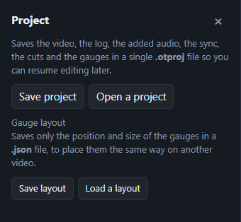
| File | Contains | Where |
|---|---|---|
Project .otproj | video, log, added sounds, sync, cuts, gauges, playhead — everything to resume editing | Project |
Layout .json | gauge position and size only | Project |
Configuration .json | gauges, positions, appearance, export settings — to reapply to another video | Style |
Gauge and appearance choices are also remembered in the browser.
Raccourcis clavier et souris
Keyboard and mouse shortcuts
| Espace | Lecture / pause |
| ← → | Image par image |
| Maj + ← → | Reculer / avancer de 5 s |
| I / O | Début / fin de coupe vidéo |
| Suppr | Couper la sélection du son ajouté |
| Ctrl + Z | Annuler (jauges, apparence, coupes, synchro, pistes audio) |
| Ctrl + Y ou Ctrl + Maj + Z | Rétablir |
| Ctrl / Maj + clic, cadre | Sélectionner plusieurs jauges |
| Échap | Vider la sélection de jauges |
| Alt + glisser | Déplacer une jauge sans aimantation |
| Molette sur une jauge | Redimensionner |
| Space | Play / pause |
| ← → | Frame by frame |
| Shift + ← → | Back / forward 5 s |
| I / O | Video cut start / end |
| Del | Cut the added-sound selection |
| Ctrl + Z | Undo (gauges, appearance, cuts, sync, audio tracks) |
| Ctrl + Y or Ctrl + Shift + Z | Redo |
| Ctrl / Shift + click, box | Select several gauges |
| Esc | Clear the gauge selection |
| Alt + drag | Move a gauge without snapping |
| Wheel on a gauge | Resize |
Aucune fonction ne correspond à cette recherche.No feature matches this search.